Méthode de travail
J’ai travaillé en autonomie sur le développement de cet outil, en suivant un mode de fonctionnement proche de celui d’un prestataire informatique. Mes deux tuteurs, n’étant pas informaticiens, ils jouaient plutôt le rôle de "clients" : ils m’ont remis un cahier des charges en début de stage, dans lequel les fonctionnalités principales et la logique de l’outil étaient déjà définies.
Nous faisions un point hebdomadaire pour valider les avancées, discuter des choix ergonomiques ou techniques, et ajuster certaines priorités. Ce fonctionnement itératif m’a permis de prendre des initiatives sur le plan technique tout en m’appuyant sur leur expertise en sécurité des machines et en prévention des risques liés à l’usage de robots en milieu industriel.
Comme les fonctionnalités principales de l'application, comme les outils de dessin, étaient déjà mises en place, mon but était donc de faire évoluer cette application pour la rendre plus complète et plus ergonomique en faisant en sorte qu'elle soit presque prête au déploiement.
De plus, l'application ayant été développée au préalable par un stagiaire devenu aujourd'hui alternant a grandement facilité mon travail ainsi que la compréhension du code et des enjeux liés à la robotique, et plus particulièrement à la robotique collaborative.
Modifications ergonomiques (UX, UI)
Gestion des raccourcis clavier et de l'historique (Undo/Redo)
Afin d'améliorer l'ergonomie globale et d'offrir une expérience utilisateur proche d'un outil de dessin classique, j'ai implémenté un système complet de gestion des raccourcis clavier.
1. Centralisation des événements clavier
À l'aide d'un Hook React nommé useKeyboardShortcuts, l'application
écoute en continu les entrées de l'utilisateur. Ce module permet notamment de :
- Annuler l'action en cours (Échap) : Réinitialise l'outil actif pour repasser instantanément sur le curseur standard de sélection.
- Retour à l'état précédent (Ctrl + Z) : Restaure la configuration précédente de la cellule robotique en interceptant les états du store de données (Zustand).
- Rétablir l'action annulée (Ctrl + Y ou Ctrl + Shift + Z) : Avance à nouveau dans l'historique des modifications.
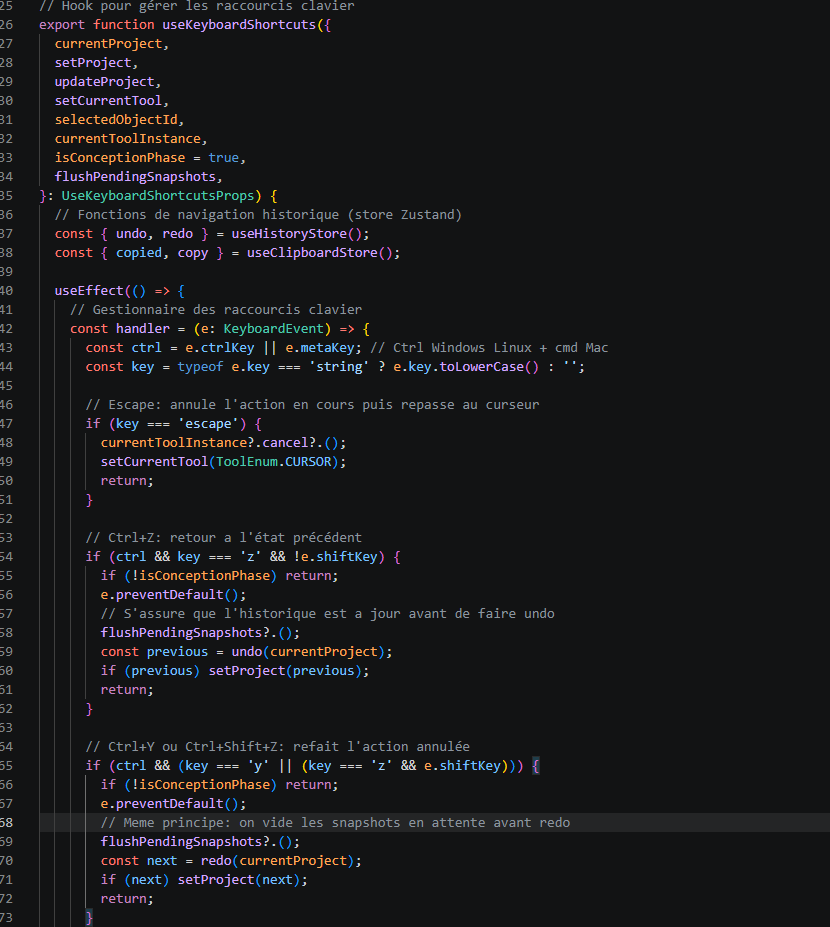
2. Architecture logicielle : Le Pattern Command
Ici, on utilise le Pattern Command qui couplé au gestionnaire d'historique
HistoryStore facilite grandement la gestion des
actions réversibles.
Chaque interaction sur le canvas (translation,rotation) génère
un objet encapsulant une méthode execute() et une méthode undo(),
pour garantir la réversibilité des actions.
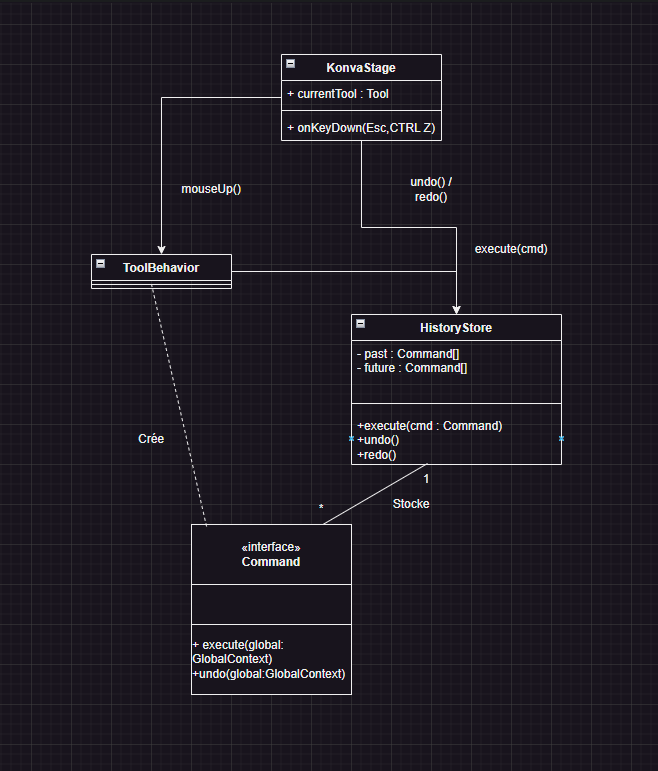
Persistance des données et sauvegarde navigateur (sessionStorage)
Afin d'éviter toute perte de travail suite à une fermeture accidentelle du navigateur ou à un
rafraîchissement de la page, j'ai mis en place un mécanisme de sauvegarde automatique locale basé
sur l'API sessionStorage.
1. Cycle de vie et désérialisation
On utilise à nouveau un hookuse-project-backup.ts, qui orchestre la persistance de
l'état global de la cellule de travail.
- Modélisation (
ProjectBackupData) : Centralisation du nom du projet, de l'état d'initialisation, de la phase active, ainsi que de l'ensemble des objets géométriques et des tâches assignées. - Lecture et désérialisation : Récupération de la chaîne brute JSON stockée
sous la clé
isaarc_project_backuppour la reconstruire dynamiquement en mémoire lors de l'initialisation. - Normalisation (
normalizeVisualObjects) : Restructuration de la collection d'objets (image de fond ,robots, espaces restreints, ouvertures, espace protégé) pour garantir le rendu Konva.
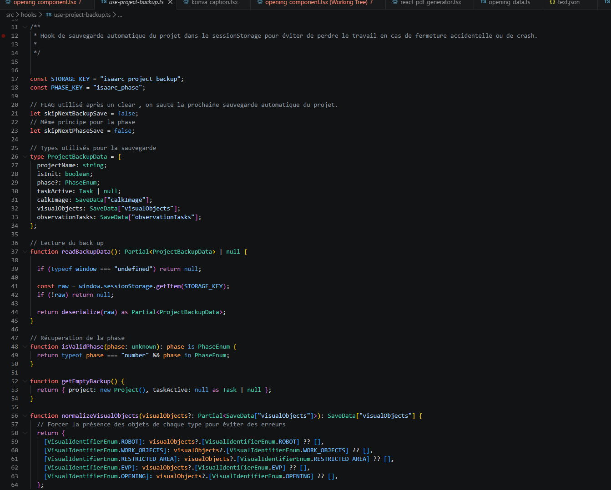
use-project-backup.ts pour la persistance des données
dans le sessionStorage
2. Flux d'état : Sauvegarde automatique
Pour ne pas dégrader les performances de l'interface (notamment lors des manipulations
sur le canvas), le cycle utilise des indicateurs d'exclusion (comme
skipNextBackupSave).
Lorsqu'une action est validée, l'état complet est sérialisé et poussé de manière asynchrone dans le stockage de session, ajoutant de la sécurité.
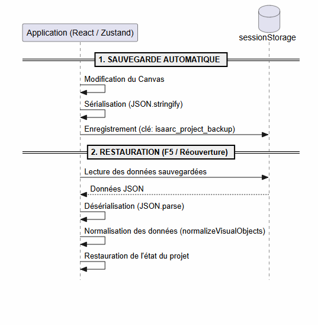
Menu de navigation et chronologie de la phase de conception
Afin de guider l'utilisateur pas à pas à travers les différentes étapes de la conception de la cellule robotique, j'ai développé un composant de navigation chronologique interactif.
1. Aide à la conception et navigation
Le composant ConceptionTimeline génère dynamiquement une suite d'étapes ordonnées
qui structurent la création de la cellule robotique :
- Suivi de l'état d'avancement : Chaque étape se voit attribuer un statut (courant, complété, ou verrouillé).
- Navigation : L'utilisateur peut librement
cliquer sur les étapes déjà validées (statut
completed) pour revenir en arrière et ajuster ses choix via la fonctionnavigateToStep. - Contrôle et validation : Les étapes futures restent désactivées
(
disabled) tant que les prérequis des phases précédentes ne sont pas entièrement remplis. Si les objets visuels de l'étape ne sont pas conforme on renvoie alors une erreur.
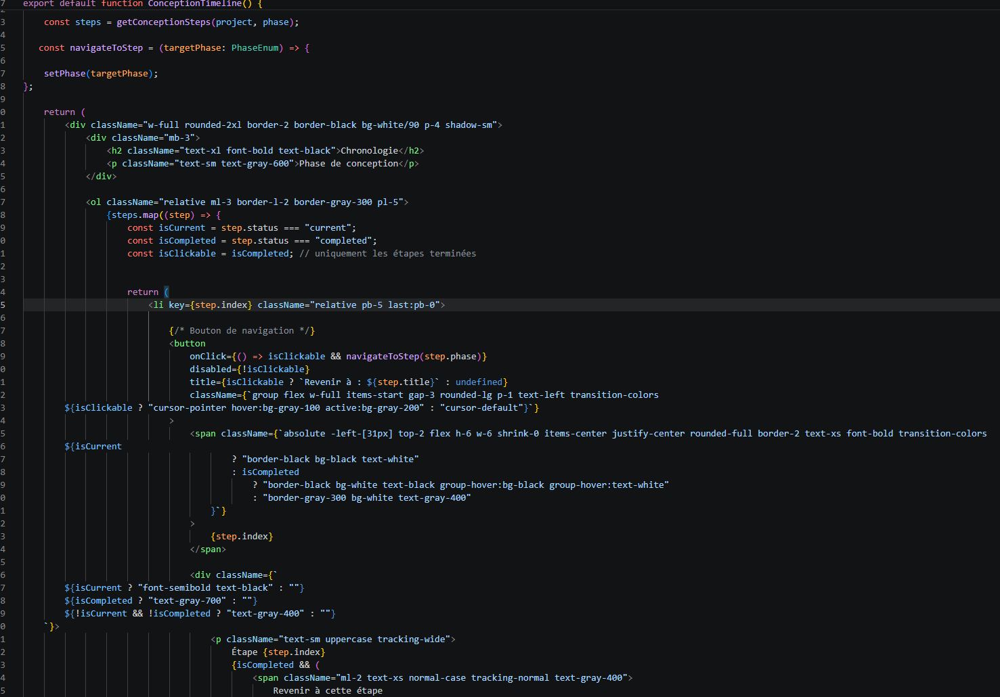
ConceptionTimeline illustrant la
logique de navigation et de gestion des étapes2. Intégration visuelle
Visuellement, le menu s'intègre sous cette forme de frise chronologique.
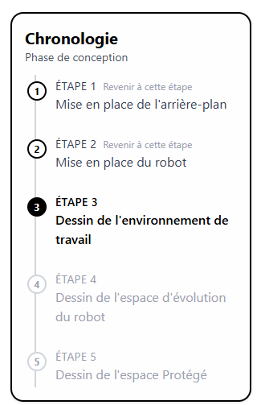
Visualisation dynamique des ouvertures (Composant SVG)
Afin d'avoir un rendu visuel instantané lors de la saisie des dimensions d'une ouverture (passage
dans la grille), j'ai développé un composant vectoriel basé sur l'élément SVG (Scalable
Vector Graphics).
Ce module permet d'illustrer la largeur, la hauteur ainsi que la distance de
l'ouverture par rapport au sol.
Voir l'exemple vidéo
1. Initialisation et calcul de l'échelle dynamique
Le composant OpeningDimensions reçoit les propriétés de l'ouverture en centimètres
et réalise la mise à l'échelle pour s'adapter à la zone d'affichage du vecteur en fonction des
dimensions saisies :
- Conversion d'unités : Les valeurs saisies par l'utilisateur sont
multipliées pour une transposition rigoureuse du plan de dessin en millimètres
(
widthMm,heightMm). - Calcul d'échelle : En fonction des dimensions maximales disponibles de la
viewBoxet de la hauteur totale (incluant la distance au solcurrentGround), le hook calcule un ratio dynamique (dynamicScale) afin d'éviter tout débordement.
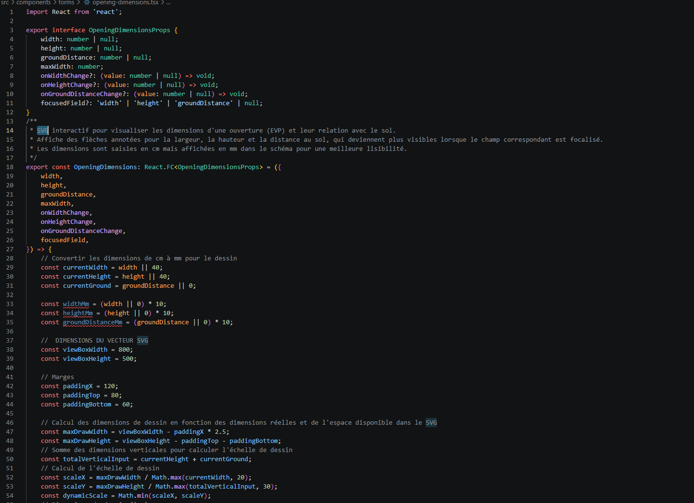
2. Rendu vectoriel et gestion du focus
La structure du rendu s'appuie sur des balises graphiques natives pour matérialiser les lignes de cotes et s'adapter au champ sélectionné par l'intégrateur :
- Lignes de cotes et flèches de mesure : Utilisation d'éléments
<line>et<polygon>calculés dynamiquement pour tracer précisément les vecteurs de largeur et de hauteur. - Focus interactif : Le composant réagit aux changements de focus de l'utilisateur, en ajustant les opacités et les couleurs pour mettre en évidence la dimension modifiée.
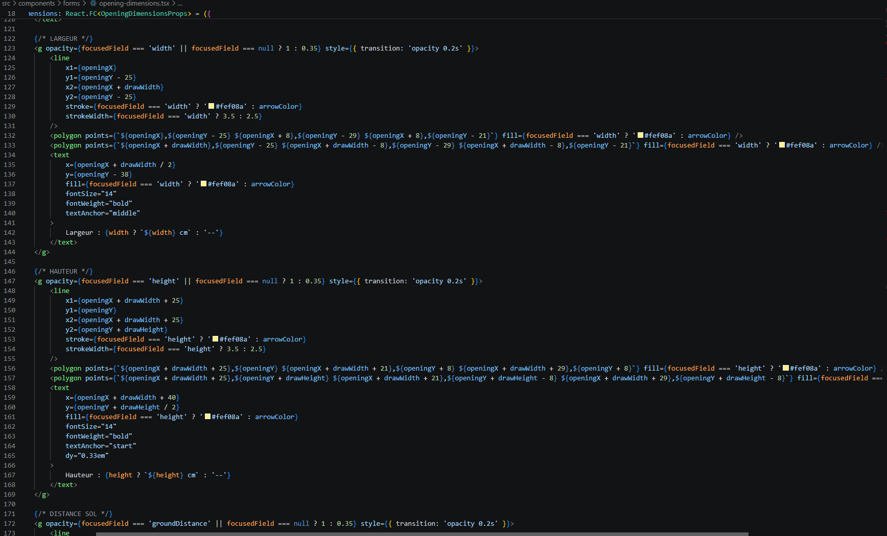
Modifications fonctionnelles
Validation et Tests de Régression du Graphe de Décision
Pour garantir la fiabilité de l'application face aux évolutions futures du code, une stratégie de tests de régression a été mise en place. L'objectif principal est de s'assurer que les modifications apportées à l'arbre décisionnel n'introduisent pas d'erreurs dans le calcul des solutions de prévention ou dans le parcours séquentiel. Cette validation s'appuie sur le test de notre graphe orienté, où chaque nœud représente une question et chaque arête représente une transition conditionnelle.
1. Modélisation logique et arbres de décision
Voici un extrait des diagrammes représentant les flux de questions et de décisions de l'application :
- Le flux principal : Ce logigramme comprend l'étape globale de Réduction des risques. Il analyse séquentiellement les types de risques (choc, écrasement, éjection...) oriente vers la solution matérielle appropriée (détecteurs de franchissements, protecteurs mobiles, etc.) en fonction des réponses de l'utilisateur.
- La partie PFL : En cas d'activation de la branche liée à la limitation de puissance et de force (PFL), le flux bascule vers la fenêtre correspondante. Ce graphe renvoie vers un calcul des vitesses théoriques admissibles.
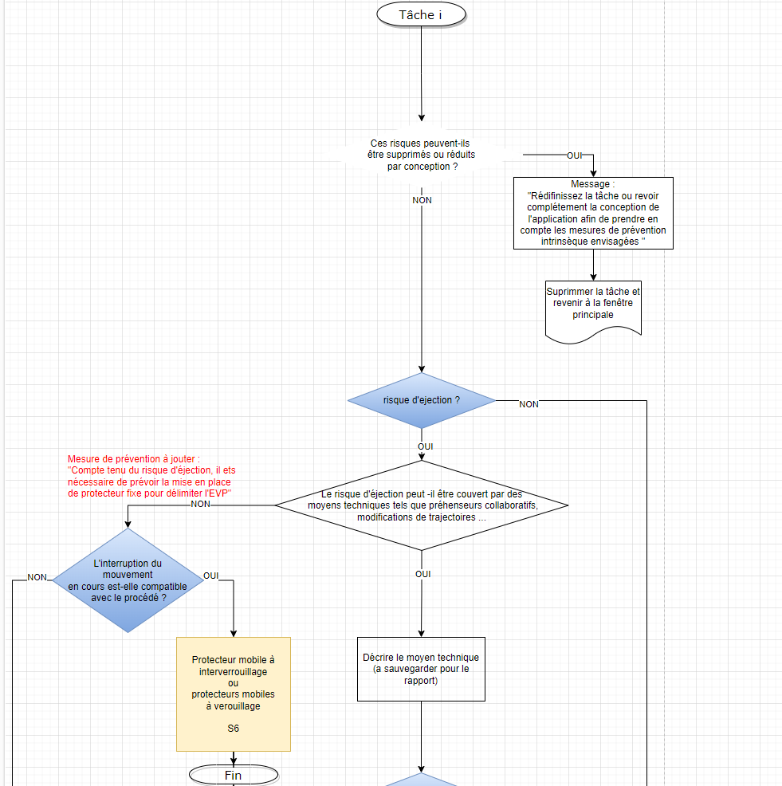
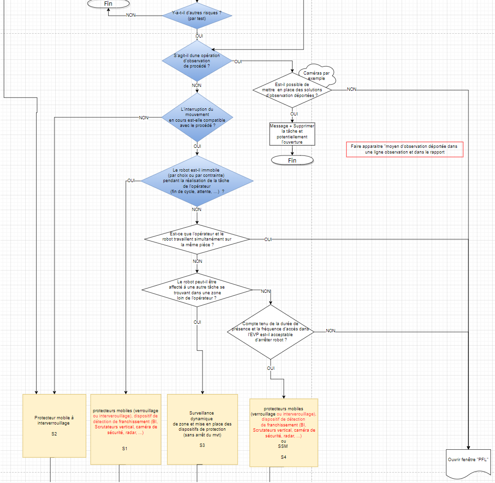
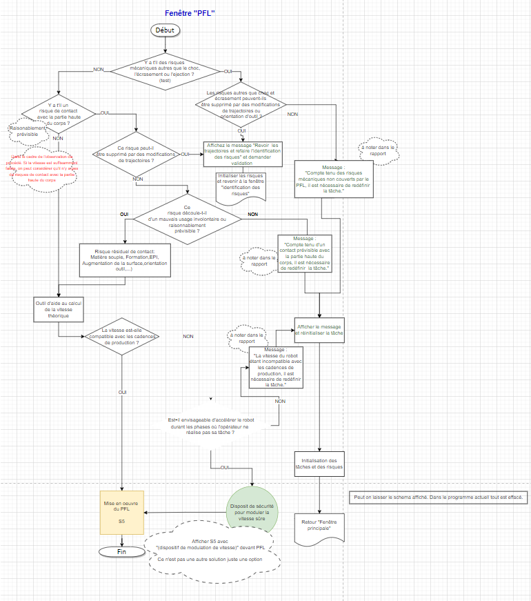
Figure 12 : Logigrammes correspondant aux flux de décisions de l'application
2. Implémentation du graphe
Pour transposer ces logigrammes en code, la logique n'a pas été écrite sous forme de conditions imbriquées. À la place, un système de graphe orienté a été développé.
- Nœuds décisionnels : Chaque transition d'une étape à une autre est gérée par un flux programmé, isolant chaque règle de décision.
-
Configuration dynamique : Comme l'illustre le
code source, les branches spécifiques (ex: éjection couverte ou non via
ejectionRiskPrevention.next) sont déclarées pour assurer le bon parcours.
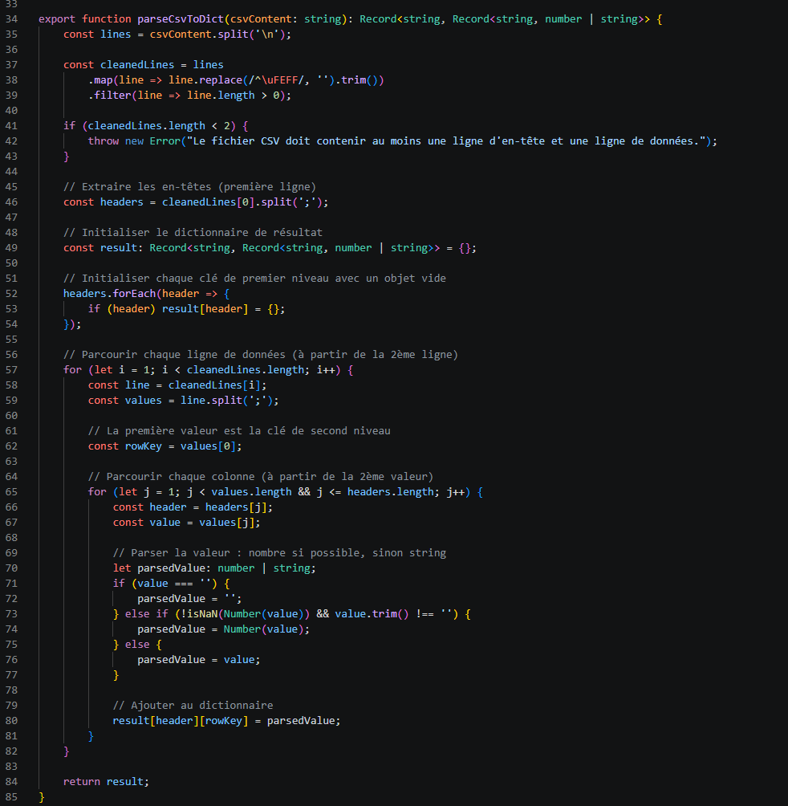
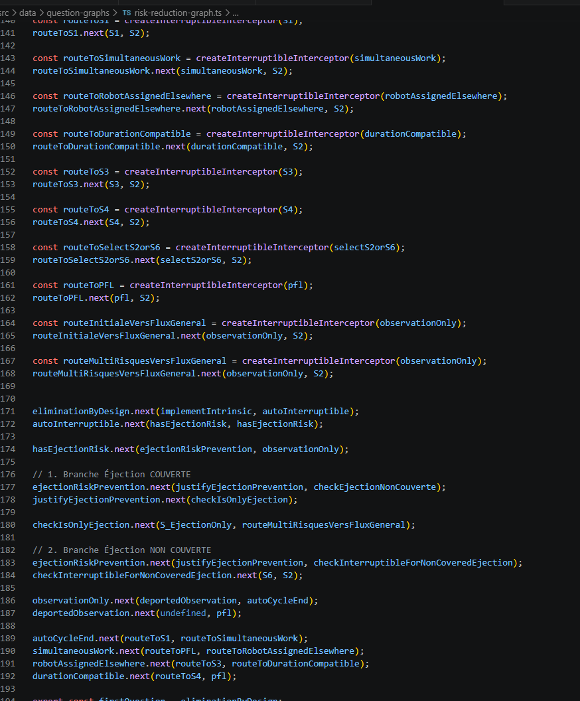
Figure 13 : Extraits de code sur le graphe et le fichier de test associé
3. Matrice de décision et automatisation des tests
Afin de valider automatiquement les chemins possibles au sein du graphe sans test manuel, une matrice de décision via un tableau CSV a été mise en place.
-
Tests des noeuds critiques : Ce tableau (CSV) contient des dizaines
de scénarios (
Cas_PFL,Cas_S1E, etc...) combinant toutes les variables possibles (risques d'éjection, interruption du procédé...) pointant vers la solution finale attendue. -
Exécution des tests de régression : Un script automatique parse la
table (
parseCsvToDict), injecte les données dans le graphe et compare le résultat obtenu avec la matrice. Si les valeurs ne correspondent pas une erreur est levée et le test échoue. - Au total 216 tests sont menés.
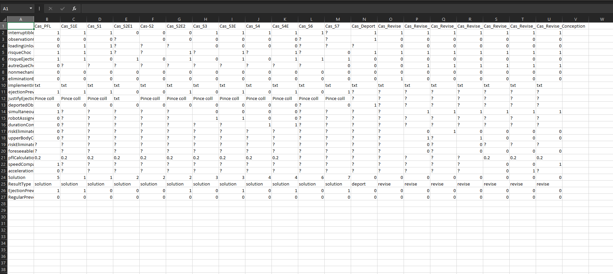
Figure 14 : Fichier CSV de la matrice de décision
Calculateurs de distance de sécurité
L'utilisation des dispositifs de détection de franchissement est régie par rapport aux exigences des normes internationales (notamment la norme ISO 13855 et ISO 13854), on peut aussi se référer à la fiche INRS ED6122 permettant d'aider l'intégrateur à l'implantation physique des de ces dispositifs en fonction de leurs résolutions et temps d'arrêt.
1. Dispositifs de détection de franchissement
L'application propose des formulaires de calcul spécifiques adaptés aux différents dispositifs ayant des règles similaires :
- Barrières immatérielles : Dispositif de sécurité qui détecte instantanément toute pénétration dans la zone surveillée (corps, main ou doigt selon la résolution) et transmet un ordre d'arrêt à la machine.
- Scrutateurs laser : Dispositif de sécurité éméttant des faisceaux laser à travers la zone dangereuse. Si un faisceau est interrompu , le scrutateur envoie un signal d'arrêt à la machine.
- Caméras de sécurité : Dispositif de sécurité utilisant la vision pour détecter les intrusions dans la zone dangereuse et déclencher un arrêt d'urgence.
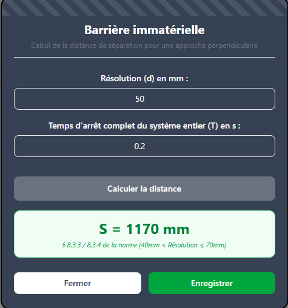
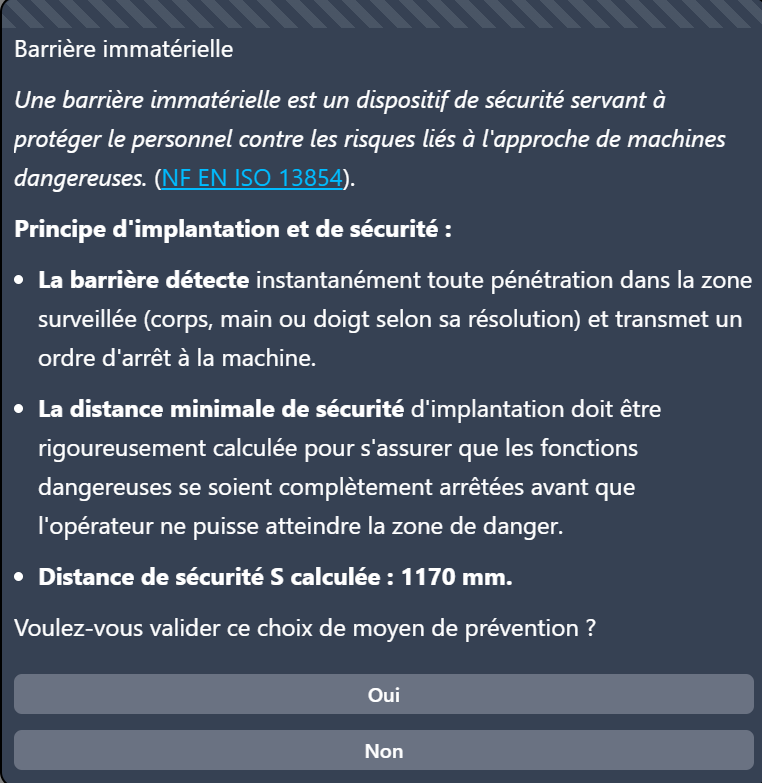
2. Concepts clés : Temps d'arrêt et Résolution pour le calcul de la distance de sécurité
Le positionnement de ces dispositifs de détection de franchissement repose sur le calcul de la distance de sécurité minimale S, calculée via son temps d'arrêt et sa résolution :
- Le Temps d'arrêt complet du système entier : Il représente l'intervalle de temps cumulé entre l'instant du franchissement du faisceau et l'arrêt de l'action dangereuse.
- La Résolution : Elle représente la capacité de détection du capteur, plus la résolution est grande (ex: détection de bras ou de corps plutôt que de doigts), plus l'opérateur peut s'introduire profondément avant le déclenchement, augmentant ainsi la distance de sécurité minimale pour empêcher tout contact avec la zone de danger.
3. Configuration des calculateurs
Pour simplifier l'implémentation de ces calculateurs, on centralise l'ensemble des règles de
calcul au sein d'une structure de données nommée
calculatorConfigs.
Ce choix permet de séparer complètement la logique mathématique de l'interface utilisateur :
- Chaque champ de saisie de l'interface graphique est relié à une clé de formulaire. Dès que l'utilisateur modifie une valeur à l'écran, le système recalcule dynamiquement la valeur retournée.
- La fonction de calcul prend en entrée les données du formulaire et applique la formule. Elle renvoie donc la distance de sécurité minimale calculée et injecte cette valeur dans la pop-up de l'interface (Figure 16).
- L'objet de configuration intègre une fonction qui génère dynamiquement le texte détaillé du moyen choisi. Ce texte doit être validé et est réutilisé lors de l'exportation du rapport PDF.
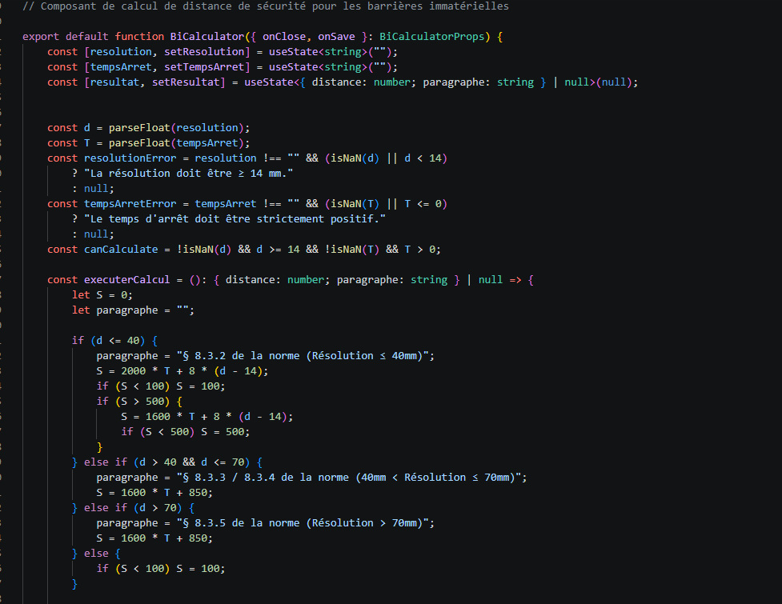
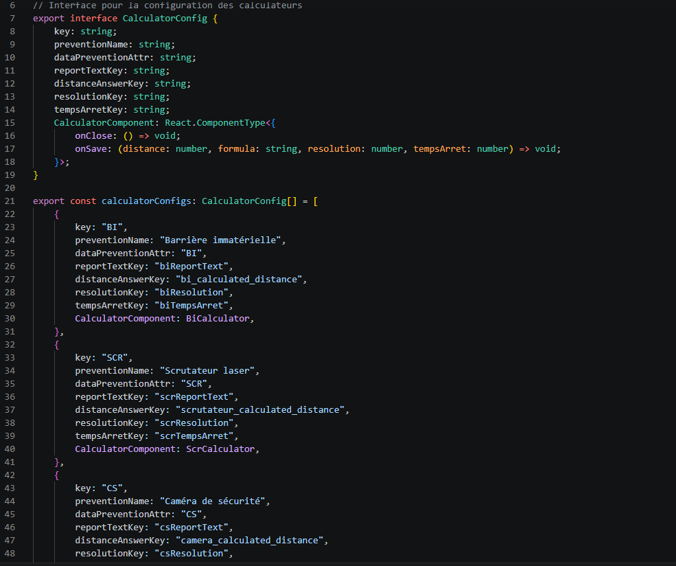
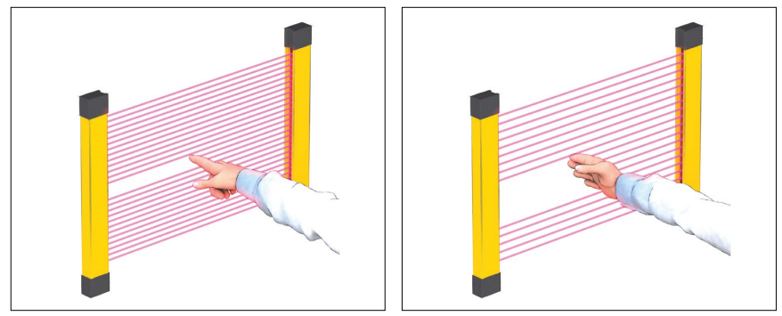
Modifications du rapport PDF
Génération de rapports PDF
J'ai fais évoluer le module de génération de rapports PDF afin qu'il soit plus complet et conforme
aux exigences de normalisation et de documentation INRS.
@react-pdf/renderer, est le module qui compile l'intégralité des
données
de la cellule (dimensions géométriques, matrice des risques, tâches
associées et résultats des calculs de distance).
1. Logique de la génération
Le flux de traitement des données est découpé en trois phases principales (Entrée, Rendu et Export).
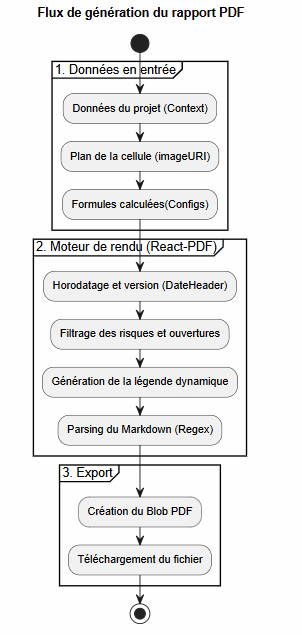
2. Optimisations et rendu
L'utilisation de @react-pdf/renderer impose certaines contraintes techniques, notamment
l'incompatibilité avec le module react-markdown.
-
Rendu markdown (
renderMarkdownInline) : Afin d'avoir un rendu visuel conforme aux attentes, j'ai développé un parseur de texte basé sur une expression régulière (regex). Cette dernière détecte les balises de style (gras, italique, puces) et les convertit en composants React PDF équivalents.
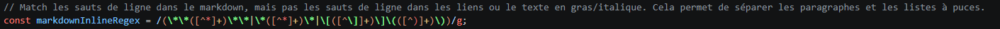
-
Composant générique (
BlockContainerPdf) : L'utilisation d'un composant global permet de gérer l'ensemble des sections du rapport PDF. Il encapsule les styles, les marges et les espacements, garantissant une cohérence visuelle et facilitant la maintenance du code.
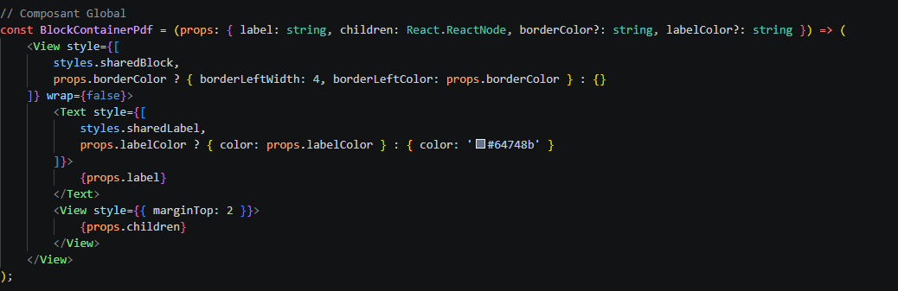